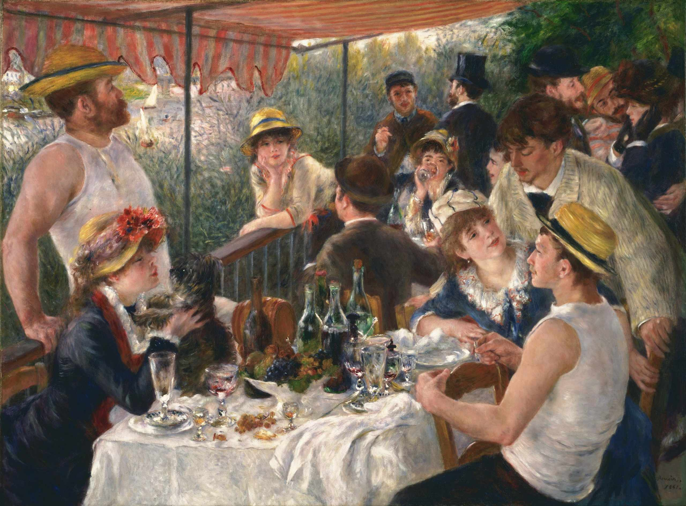
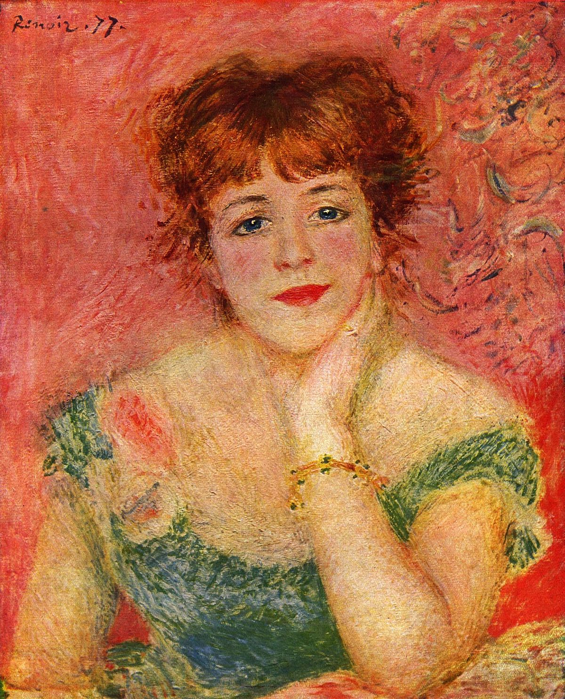

25.02.1841 – 03.12.1919
Огюст Ренуар
Пьер Огюст Ренуар — французский живописец,
график и скульптор один из основных
представителей импрессионизма.
Известен, в первую очередь, как мастер
светского портрета, не лишённого сентиментальности.
Ренуар первым из импрессионистов снискал успех у состоятельных парижан.
В середине 1880-х гг. он фактически порвал с импрессионизмом, вернувшись к линейности
классицизма, к «энгризму».
.jpg)
1880—1881. Холст, масло. 130 × 173 см
Завтрак гребцов
Картина была написана в ресторане Фурнез, расположенном
на острове на реке Сена, находящемся в Шату, немного к западу от Парижа.
Фактически картина представляет собой
групповой портрет встречи друзей.
Царит радостная, непринуждённая обстановка,
нет никакой парадности, все находятся в естественных,
случайных позах. За перилами видна густая зелень,
за которой проглядывает река Сена.
На картине Ренуар изобразил многих своих друзей и знакомых. Картина послужила мотивом для французского сериала «Кракелюры» (фр. Le vernis craque — «Треснувший лак»), который был снят режиссёром Даниэлем Жанно в 2011 году.
На картине Ренуар изобразил многих своих друзей и знакомых. Картина послужила мотивом для французского сериала «Кракелюры» (фр. Le vernis craque — «Треснувший лак»), который был снят режиссёром Даниэлем Жанно в 2011 году.

1877. Холст, масло. 56 × 46 см
Парадный портрет Жанны Самари
Этот портрет Жанны Самари считается одним из наиболее
импрессионистических портретов во всём творчестве художника. Жанна,
одновременно улыбающаяся и задумчивая, изображена в изысканном зелёно-голубом
платье на розовом фоне. Актриса опирается подбородком на левую руку, запястье
которой обрамлено браслетом. Её рыжеватые волосы чуть разлетаются в разные стороны.
В этом портрете Ренуар сумел подчеркнуть лучшие черты своей модели: красоту, грацию, живой ум, открытый и непринуждённый взгляд, лучезарную улыбку. Основные цвета, составляющие колорит картины — оттенки розового и зелёного. Стиль работы художника очень свободный, местами до небрежности, однако это создаёт атмосферу необычайной свежести, душевной ясности и безмятежности.
В этом портрете Ренуар сумел подчеркнуть лучшие черты своей модели: красоту, грацию, живой ум, открытый и непринуждённый взгляд, лучезарную улыбку. Основные цвета, составляющие колорит картины — оттенки розового и зелёного. Стиль работы художника очень свободный, местами до небрежности, однако это создаёт атмосферу необычайной свежести, душевной ясности и безмятежности.

1881. Холст, масло. 100,4 × 80,9 см
Две сестры (На террасе)
Картина была написана на террасе Дома Фурнез — ресторана, расположенного на острове на реке Сена,
который находился в Шату, западном предместье Парижа.
На картине изображена сидящая девушка,
рядом с которой стоит маленькая девочка,
которая смотрит прямо на зрителя. За перилами террасы видна густая зелень,
за которой проглядывает река Сена. Ренуар любил это место — незадолго до этого,
здесь же им была написана другая известная картина — «Завтрак гребцов».
В качестве «старшей сестры» позировала Жанна Дарло, будущая актриса, которой на тот момент было 18 лет. Неизвестно, кто позировал в качестве «младшей сестры», но утверждается, что в реальной жизни они не были родственницами.
В качестве «старшей сестры» позировала Жанна Дарло, будущая актриса, которой на тот момент было 18 лет. Неизвестно, кто позировал в качестве «младшей сестры», но утверждается, что в реальной жизни они не были родственницами.

Нажмите на картинку

1871. Холст, масло. 73,7 × 59,1 см
Натюрморт с букетом и веером
Натюрморты с цветами не были главной творческой темой Ренуара.
Тем не менее, он написал достаточно много таких картин. Так можно
было расслабиться после написания более серьёзных полотен. По
признанию Ренуара, натюрморты легко пишутся и неплохо продаются.
«Натюрморт с букетом и веером» - однин из самых известных натюрмортов Ренуара. На нём изображён лежащий на столике букет, пара книг и ваза с японским веером. На заднем плане на стене висит картина — это гравюра Эдуара Мане с картины Диего Веласкеса. Картина считается данью уважения Мане, поскольку на ней есть несколько предметов, связанных с ним.
«Натюрморт с букетом и веером» - однин из самых известных натюрмортов Ренуара. На нём изображён лежащий на столике букет, пара книг и ваза с японским веером. На заднем плане на стене висит картина — это гравюра Эдуара Мане с картины Диего Веласкеса. Картина считается данью уважения Мане, поскольку на ней есть несколько предметов, связанных с ним.

1881—1886. Холст, масло. 50.5 x 42.5 см
Зонтики
На картине изображены люди на парижской улице.
Многие из них с зонтиками, но не все — по-видимому, дождь только что кончился или только начинается.
В левой части на переднем плане изображена молодая женщина с корзинкой, позади неё, в правой части, женщина с двумя девочками,
меньшая из которых смотрит на зрителя. Композиция картины напоминает
фотографию — в частности, обрезанными фигурами людей по краям.
Такой приём был популярен у импрессионистов того времени.
Люди в правой части картины написаны в мягком, воздушном импрессионистском стиле, в то время как женщина и мужчина в левой части имеют более чёткие очертания. Bзначально все фигуры были написаны в одном стиле. Затем, через несколько лет, Ренуар внёс значительные изменения в левой части картины, практически не меняя её правую часть.
Люди в правой части картины написаны в мягком, воздушном импрессионистском стиле, в то время как женщина и мужчина в левой части имеют более чёткие очертания. Bзначально все фигуры были написаны в одном стиле. Затем, через несколько лет, Ренуар внёс значительные изменения в левой части картины, практически не меняя её правую часть.

1869. Холст, масло. 66 × 81 см
Лягушатник
«Лягушатник» представлял собой кафе на воде, размещавшееся на пришвартованном
к берегу Сены понтоне, стоявшем в небольшом рукаве реки и соединявшемся
с островом переходным мостиком, перекинутым через крохотный островок.
В этом месте на Сене между Шату (фр. Chatou) и Буживалем к северо-западу
от Парижа была целая группа островов, куда парижане приезжали на отдых.
Эти места подробно описаны братьями Гонкурами («Манетт Саломон»), Эмилем Золя и Мопассаном.
«Лягушатник» получил своё название благодаря тому, что здесь в большом количестве собирались девицы лёгкого поведения, так называемые «лягушки», приезжавшие сюда в сопровождении мелких хулиганов и проходимцев из предместья. Иногда они приезжали в одиночестве, в надежде поймать клиента, для наживки используя вызывающие, крикливые наряды.
«Лягушатник» получил своё название благодаря тому, что здесь в большом количестве собирались девицы лёгкого поведения, так называемые «лягушки», приезжавшие сюда в сопровождении мелких хулиганов и проходимцев из предместья. Иногда они приезжали в одиночестве, в надежде поймать клиента, для наживки используя вызывающие, крикливые наряды.

1885. Холст, масло. 170,5 × 112,5 см
В саду
Одна из значительных работ Ренуара
несет на себе явный оттенок
автобиографичности художника. 21 марта 1885 года
Алина Шариго родила Ренуару первенца и фактически с
этого момента у них началась настоящая семейная жизнь. Н
а картине изображен решительный момент объяснения в любви:
мужчина явно предложил своей любимой руку и сердце, уже
сказаны все слова и он ждёт решения девушки; девушка же
запечатлена в момент принятия решения, она имеет несколько растерянный и задумчивый вид.
Моделями для картины послужили сама Алина Шариго и молодой (на тот момент ему 23 года) французский художник Анри Лоран-Деруссоrufr. Известен небольшой этюд/набросок этой картины, который находится в частной коллекции, там изображены головы и плечи персонажей, причем зеркально по отношению к последующей картине.
Моделями для картины послужили сама Алина Шариго и молодой (на тот момент ему 23 года) французский художник Анри Лоран-Деруссоrufr. Известен небольшой этюд/набросок этой картины, который находится в частной коллекции, там изображены головы и плечи персонажей, причем зеркально по отношению к последующей картине.